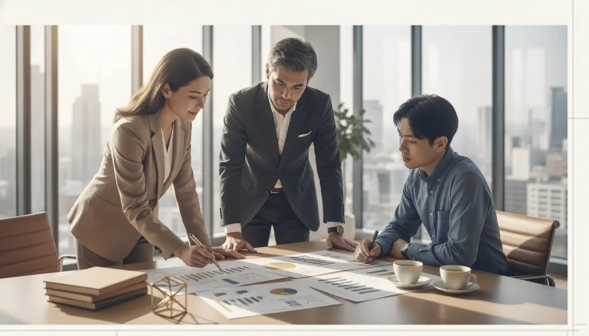

MISSION
私たちの
自分の
行動が
一人でも
変化の
ST CONSULTINGは、
人と

PHILOSOPHY
自ら
その
教わった
私たちは
PROFILE
代表紹介
代表取締役社長田代 茂人Shigeto Tashiro
美容専門学校で
2017年、
2023年、
キャリアコンサルティング2級技能士／

100社
支援企業数
10,000名以上
成長と
ビジネスパーソン
19四半期連続
目標達成
CONTACT
次の一歩を
一緒に考え行動します。
一緒に
研修・
お気軽に